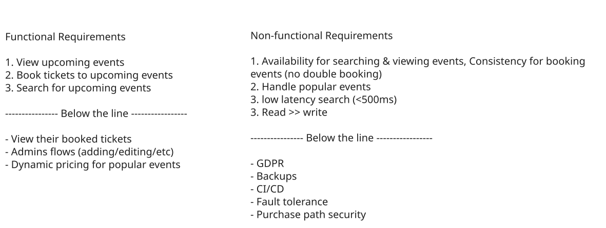
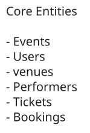
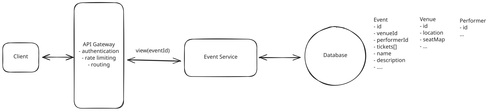
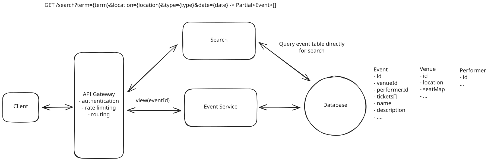
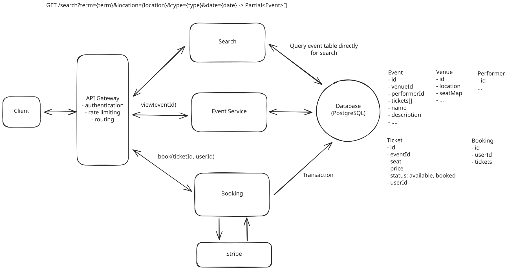
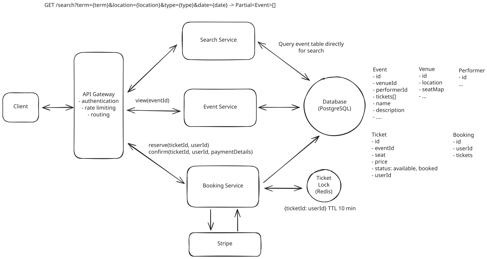
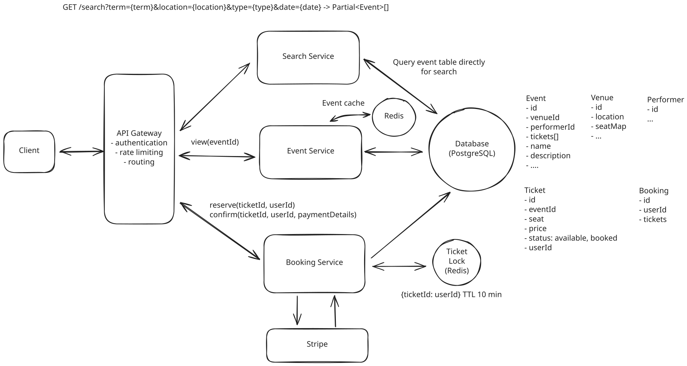
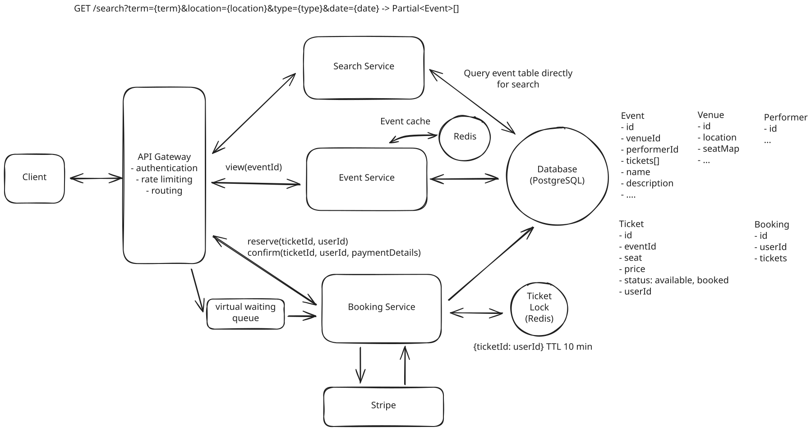
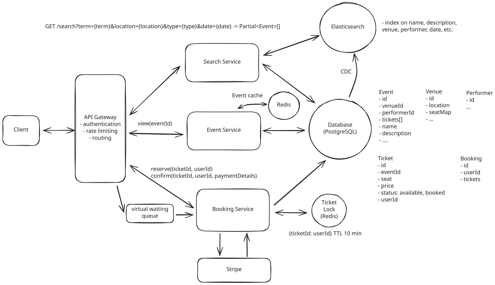
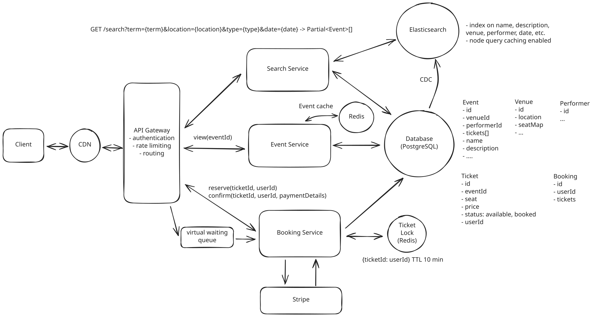

Common Problems
Ticketmaster
Dealing with Contention
Scaling Reads
Real-time Updates
Understanding the Problem
🎟️ What is Ticketmaster?
Ticketmaster is an online platform that allows users to purchase tickets for concerts, sports events, theater, and other live entertainment.
Functional Requirements
- Start your interview by defining the functional and non-functional requirements. For user facing applications like this one, functional requirements are the "Users should be able to..." statements whereas non-functional defines the system qualities via "The system should..." statements.
- Prioritize the top 3 functional requirements. Everything else shows your product thinking, but clearly note it as "below the line" so the interviewer knows you won't be including them in your design. Check in to see if your interviewer wants to move anything above the line or move anything down. Choosing just the top 3 is important to ensuring you stay focused and can execute in the limited time window.
Core Requirements
- Users should be able to view events
- Users should be able to search for events
- Users should be able to book tickets to events
Below the line (out of scope):
- Users should be able to view their booked events
- Admins or event coordinators should be able to add events
- Popular events should have dynamic pricing

Non-Functional Requirements
Core Requirements
- The system should prioritize availability for searching & viewing events, but should prioritize consistency for booking events (no double booking)
- The system should be scalable and able to handle high throughput in the form of popular events (10 million users, one event)
- The system should have low latency search (< 500ms)
- The system is read heavy, and thus needs to be able to support high read throughput (100:1)
Below the line (out of scope):
- The system should protect user data and adhere to GDPR
- The system should be fault tolerant
- The system should provide secure transactions for purchases
- The system should be well tested and easy to deploy (CI/CD pipelines)
- The system should have regular backups
Here's how it might look on your whiteboard:

Requirements
Adding features that are out of scope is a "nice to have". It shows product thinking and gives your interviewer a chance to help you reprioritize based on what they want to see in the interview. That said, it's very much a nice to have. If additional features are not coming to you quickly, don't waste your time and move on.
The Set Up
Planning the Approach
Before you move on to designing the system, it's important to start by taking a moment to plan your strategy. Fortunately, for these common user-facing product-style questions, the plan should be straightforward: build your design up sequentially, going one by one through your functional requirements. This will help you stay focused and ensure you don't get lost in the weeds as you go. Once you've satisfied the functional requirements, you'll rely on your non-functional requirements to guide you through the deep dives.
Defining the Core Entities
I like to begin with a broad overview of the primary entities. At this stage, it is not necessary to know every specific column or detail. We will focus on the intricacies, such as columns and fields, later when we have a clearer grasp. Initially, establishing these key entities will guide our thought process and lay a solid foundation as we progress towards defining the API.
To satisfy our key functional requirements, we'll need the following entities:
- Event: This entity stores essential information about an event, including details like the date, description, type, and the performer or team involved. It acts as the central point of information for each unique event.
- User: Represents the individual interacting with the system. Needs no further explanation.
- Performer: Represents the individual or group performing or participating in the event. Key attributes for this entity include the performer's name, a brief description, and potentially links to their work or profiles. (Note: this could be artist, company, collective, or many other types of entities. The choice of "performer" is intending to be general enough to cover all possible groups)
- Venue: Represents the physical location where an event is held. Each venue entity includes details such as address, capacity, and a specific seat map, providing a layout of seating arrangements unique to the venue.
- Ticket: Contains information related to individual tickets for events. This includes attributes such as the associated event ID, seat details (like section, row, and seat number), pricing, and status (available or sold). When a new event is created, a ticket is generated for each seat in the venue based on the venue's seat map. The seat map itself is stored as part of the Venue entity (for example, a JSON structure or related table defining sections, rows, and seat numbers along with their coordinates for rendering). The client uses this seat map data combined with each ticket's status to render the interactive seat selection UI.
- Booking: Records the details of a user's ticket purchase. It typically includes the user ID, a list of ticket IDs being booked, total price, and booking status (such as in-progress or confirmed). This entity is key in managing the transaction aspect of the ticket purchasing process.
You could arguably fold booking data into the Ticket entity itself, but a separate Booking entity is useful when a user purchases multiple tickets in one transaction since it groups them under a single order with a shared payment status and total price.
In the actual interview, this can be as simple as a short list like this. Just make sure you talk through the entities with your interviewer to ensure you are on the same page.

Entities
As you move onto the design, your objective is simple: create a system that meets all functional and non-functional requirements. To do this, I recommend you start by satisfying the functional requirements and then layer in the non-functional requirements afterward. This will help you stay focused and ensure you don't get lost in the weeds as you go.
API or System Interface
The API for viewing events is straightforward. We create a simple GET endpoint that takes in an eventId and return the details of that event.
GET /events/:eventId -> Event & Venue & Performer & Ticket[]
- tickets are to render the seat map on the ClientIn most instances, your interviewer will be able to read between the lines of your core entities and the requirement we're satisfying to understand the data returned by the API. They will either tell you or you can ask them if they'd like you to go into additional detail but be cautious about being over-verbose - you have a lot of ground to cover and enumerating the fields in the Event object may not be the best use of your time!
Next, for search, we just need a single GET endpoint that takes in a set of search parameters and returns a list of events that match those parameters.
GET /events/search?keyword={keyword}&start={start_date}&end={end_date}&pageSize={page_size}&page={page_number} -> Event[]When it comes to purchasing/booking a ticket, we have a post endpoint that takes the list of tickets and payment details and returns a bookingId.
Later in the design, we'll evolve this into two separate endpoints - one for reserving a ticket and one for confirming a purchase, but this is a good starting point.
POST /bookings/:eventId -> bookingId
{
"ticketIds": string[],
"paymentDetails": ...
}It's ok to have simple APIs from the start that you evolve as your design progresses. As always, just communicate, "Here is a simple API to start, but as we get into the design, we'll likely need to evolve this to handle more complex scenarios."
High-Level Design
1) Users should be able to view events
When a user navigates to www.yourticketmaster.com/event/:eventId they should see details about that event. Crucially, this should include a seatmap showing seat availability. The page will also display the event's name, along with a description. Key information such as the location (including venue details), event dates, and facts about the performers or teams involved could be outlined.
We start by laying out the core components for communicating between the client and our microservices. We add our first service, "Event Service," which connects to a database that stores the event, venue, and performer data outlined in the Core Entities above. This service will handle the reading/viewing of events.

View Event Flow
- Clients: Users will interact with the system through the clients website or app. All client requests will be routed to the system's backend through an API Gateway.
- API Gateway: This serves as an entry point for clients to access the different microservices of the system. It's primarily responsible for routing requests to the appropriate services but can also be configured to handle cross-cutting concerns like authentication, rate limiting, and logging.
- Event Service: Our first microservice is responsible for handling view API requests by fetching the necessary event, venue, and performer information from the database and returning the results to the client.
- Events DB: Stores tables for events, performers, and venues.
Let's walk through exactly what happens when a user makes a request to www.yourticketmaster.com/event/:eventId to view an event.
- The client makes a REST GET request with the eventId
- The API gateway then forwards the request onto our Event Service.
- The Event Service then queries the Events DB for the event, venue, and performer information and returns it to the client.
2) Users should be able to search for events
Sweet, we now have the core functionality in place to view an event! But how are users supposed to find events in the first place? When users first open your site, they expect to be able to search for upcoming events. This search will be parameterized based on any combination of keywords, artists/teams, location, date, or event type.
Let's start with the most basic thing you could do - we'll create a simple service which accepts search queries. This service will connect your DB and query it by filtering for the fields in the API request. This has issues, but it's a good starting point. We will dig into better options in the deep dives below.

Search Flow
When a user makes a search request, it's straightforward:
- The client makes a REST GET request with the search parameters
- Our load balancer accepts the request and routes it to the API gateway with the fewest current connections.
- The API gateway then, after handling basic authentication and rate limiting, forward the request onto our Search Service.
- The Search Service then queries the Events DB for the events matching the search parameters and returns them to the client.
3) Users should be able to book tickets to events
The main thing we are trying to avoid is two (or more) users paying for the same ticket. That would make for an awkward situation at the event! To handle this consistency issue, we need to select a database that supports transactions. This will allow us to ensure that only one user can book a ticket at a time.
While anything from MySQL to DynamoDB would be fine choices (just needs ACID properties), we'll opt for PostgreSQL. Additionally, we need to implement proper isolation levels and either row-level locking or Optimistic Concurrency Control (OCC) to fully prevent double bookings. More on this later in our deep dives.
Pattern: Dealing with Contention
This is a clear example of a place where high contention can lead to bad outcomes like double bookings. Dealing with contention is a pattern that shows up in a lot of system design interviews and is worth going deeper into.

Simple Booking Flow
- New Tables in Events DB: First we add two new tables to our database, Bookings and Tickets. The Bookings table will store the details of each booking, including the user ID, ticket IDs, total price, and booking status. The Tickets table will store the details of each ticket, including the event ID, seat details, pricing, and status. The Tickets table will also have a bookingId column that links it to the Bookings table.
- Booking Service: This microservice is responsible for the core functionality of the ticket booking process. It interacts with databases that store data on bookings and tickets.
- It interfaces with the Payment Processor (Stripe) for transactions. Once a payment is confirmed, the booking service updates the ticket status to "sold".
- It communicates with the Bookings and Tickets tables to fetch, update, or store relevant data.
- Payment Processor (Stripe): An external service responsible for handling payment transactions. Once a payment is processed, it notifies the booking service of the transaction status.
When a user goes to book a ticket, the following happens:
- The user is redirected to a booking page where they can provide their payment details and confirm the booking.
- Upon confirmation, a POST request is sent to the /bookings endpoint with the selected ticket IDs.
- The booking server initiates a transaction to:
- Check the availability of the selected tickets.
- Update the status of the selected tickets to "booked".
- Create a new booking record in the Bookings table.
- If the transaction is successful, the booking server returns a success response to the client. Otherwise, if the transaction failed because another user booked the ticket in the meantime, the server returns a failure response and we pass this information back to the client.
Note, this means that when a new event is created we need to create a new ticket for each seat in the venue. Each of which will be available for purchase until it is booked.
You may notice that multiple services share the same database. The "database per service" rule gets repeated a lot, but it's not a hard-and-fast rule. Many of the world's largest companies share databases across services when it makes sense. Here, a shared database is the right call because the data is tightly coupled (bookings need tickets need events), we need ACID transactions for booking, and splitting databases would add complexity for no real benefit. In your interview, weigh the tradeoffs and make a decision instead of parroting architectural dogma.
You may have noticed there is a fundamental issue with this design. Users can get to the booking page, type in their payment details, and then find out that the ticket they wanted is no longer available. This would suck and is something that we are going to discuss how to avoid later on in our deep dives. For now, we have a simple implementation that meets the functional requirement.
Potential Deep Dives
With the core functional requirements met, it's time to dig into the non-functional requirements via deep dives. These are the main deep dives I like to cover for this question:
The degree to which a candidate should proactively lead the deep dives is a function of their seniority. For example, it is completely reasonable in a mid-level interview for the interviewer to drive the majority of the deep dives. However, in senior and staff+ interviews, the level of agency and ownership expected of the candidate increases. They should be able to proactively look around corners and address the system in ways that the interviewer may not have thought of.
1) How do we improve the booking experience by reserving tickets?
The current solution, while it technically works, results in a horrible user experience. No one wants to spend 5 minutes filling out a payment form only to find out the tickets they wanted are no longer available because someone else typed their credit card info faster.
If you've ever used similar sites to book event tickets, airline tickets, hotels, etc., you've probably seen a timer counting down the time you have to complete your purchase. This is a common technique to reserve the tickets for a user while they are checking out. Let's discuss how we can add something like this to our design.
We need to ensure that the ticket is locked for the user while they are checking out. We also need to ensure that if the user abandons the checkout process, the ticket is released for other users to purchase. Finally, we need to ensure that if the user completes the checkout process, the ticket is marked as sold and the booking is confirmed. Here are a couple ways we could do this:
Approach
A bad solution many candidates propose for this problem is to use long-running database locks (sometimes referred to as "interactive transactions"). In this method, the database is directly utilized to lock a specific ticket row, ensuring exclusive access to the first user trying to book it. This is typically done using the SELECT FOR UPDATE statement in PostgreSQL, which locks the selected row(s) as part of a database transaction. The lock on the row is maintained until the transaction is either committed or rolled back. During this time, other transactions attempting to select the same row with SELECT FOR UPDATE will be blocked until the lock is released. This ensures that only one user can process the ticket booking at a time.
When it comes to unlocking, there are two cases we need to consider:
- If the user finalizes the purchase, the transaction is committed, the database lock is released, and the ticket status is set to "Booked".
- If the user takes too long or abandons the purchase, the system has to rely on their subsequent actions or session timeouts to release the lock. This introduces the risk of tickets being locked indefinitely if not appropriately handled.
Challenges
Why is this a bad idea? Well, database locks are meant to be used for short periods of time (a single, near-instant, transaction). Keeping a transaction open for a long period (like the 5-minute lock duration) is generally not advisable. It can strain database resources and increase the risk of lock contention and deadlocks. While PostgreSQL does support lock_timeout to fail transactions that wait too long for locks, this isn't a graceful solution for user-facing flows because users would see an error rather than being queued. Implementing a timeout would require application-level management and additional complexity. Finally, this approach may not scale well under high load, as prolonged locks can lead to increased wait times for other users and potential performance bottlenecks. Handling edge cases, such as application crashes or network issues, becomes more challenging, as these could leave locks in an uncertain state.
Approach
A better solution is to lock the ticket by adding a status field and expiration time on the ticket table. The ticket can then be in 1 of 3 states: available, reserved, booked. This allows us to track the status of each ticket and automatically release the lock once the expiration time is reached. When a user selects a ticket, the status changes from "available" to "reserved", and the current timestamp is recorded.
Now lets think about how we handle unlocking with this approach:
- If the user finalizes the purchase, the status changes to "booked", and the lock is released.
- If the user takes too long or abandons the purchase, the status changes back to "available" once the expiration time is reached, and the lock is released. The tricky part here is how we handle the expiration time. We could use a cron job to periodically query for rows with "reserved" status where the time elapsed exceeds the lock duration and then set them back to "available". This is much better, but the lag between the elapsed time and the time the row is changed is not ideal for popular events. Ideally, the lock should be removed almost exactly after expiration.
Challenges
Whether we use the cron job or on-demand approach, they both have significant drawbacks:
Cron Job Approach:
- Delay in Unlocking: There's an inherent delay between the ticket expiration and the cron job execution, leading to inefficiencies, particularly for high-demand events. Tickets might remain unavailable for purchase even after the expiration time, reducing booking opportunities.
- Reliability Issues: If the cron job experiences failures or delays, it can cause significant disruptions in the ticket booking process, leading to customer dissatisfaction and potential revenue loss.
Approach
We can do even better than our cron-based solution by recognizing the status of any given ticket is the combination of two attributes: whether it's available OR whether it's been reserved but the reservation has expired. Rather than using long-running interactive transactions or locks, we can create short transactions to update the fields on the ticket record (e.g. changing "available" to "reserved" and setting expiration to +10 minutes). Inside these transactions we can confirm the ticket is available before reserving it or that the expiration on the previous reservation has passed.
So, in pseudocode, our transaction looks like this:
- We begin a transaction
- We check to see if the current ticket is either AVAILABLE or (RESERVED but expired)
- We update the ticket to RESERVED with expiration now + 10 minutes.
- We commit the transaction.
This guarantees only one user will be able to reserve or book a ticket and that users will be able to claim tickets from expired reservations.
Challenges
Our read operations are going to be be slightly slower by needing to filter on two values. We can partly solve this by utilizing materialized views or other features of modern RDBMS's together with a compound index. Our database table is also less legible for other consumers of the data, since some reservations are actually expired. We can solve that problem by utilizing a cron or periodic sweep job like above, with the very important difference that our system behavior will not be affected if that sweep is delayed.
Approach
Another great solution is to implement a distributed lock with a TTL (Time To Live) using a distributed system like Redis.
You might wonder, if PostgreSQL already provides strong consistency, why do we need Redis at all? The key reason is that we need a temporary reservation that automatically expires. PostgreSQL doesn't natively support row-level TTLs, you'd need application-level expiration logic (the cron approach above). Redis gives us automatic key expiration built in, and since it's in-memory, lock acquisition and release are extremely fast under high concurrency.
Here is how it would work:
- When a user selects a ticket, acquire a lock in Redis using a unique identifier (e.g., ticket ID) with a predefined TTL (Time To Live). This TTL acts as an automatic expiration time for the lock.
- If the user completes the purchase, the ticket's status in the database is updated to "Booked", and the lock in Redis is manually released by the application code before the TTL expires.
- If the TTL expires (indicating the user did not complete the purchase in time), Redis automatically releases the lock. This ensures that the ticket becomes available for booking by other users without any additional intervention.
Now our Ticket table only has two states: available and booked. Locking of reserved tickets is handled entirely by Redis. The key-value pair in Redis is the ticket ID and the value is the user ID. This way we can ensure that when a user confirms the booking, they are the user who reserved the ticket.
There's no race condition when acquiring the lock, Redis's SET key value NX EX seconds command is atomic, so only one client will successfully set the key. For multi-ticket bookings (a user selecting multiple seats), you can acquire locks sequentially per ticket. If any lock fails, release the ones you already acquired. Using a Lua script on Redis can make multi-lock acquisition atomic if the tickets hash to the same Redis node.
Challenges
Read-path complexity: With reservations living in Redis rather than the database, the Event Service needs a way to show reserved seats as unavailable on the seat map. One approach is to query Redis for all locked ticket IDs for a given event (using a Redis Set keyed by event:{eventId}:reserved that gets updated alongside each lock). This adds a Redis round-trip to the read path but is fast in practice. Alternatively, you can write-through a "reserved" status to the database when acquiring the lock, treating the Redis TTL as the source of truth for expiration and using a periodic sweep to clean up stale reservations in the DB. Either way, this is worth calling out in an interview.
Failure handling: If our lock goes down for any reason, then we have a period of time where user experience is degraded. Note that we will still never have a "double booking" since our database will use OCC (Optimistic Concurrency Control) or row-level locking to ensure this. The downside is just that users can get an error after filling out their payment details if someone beats them to it. This sucks, but I would argue that it is a better outcome than having all tickets appear unavailable (as would be the case if the cron job in our previous solution failed).
TTL expiration during payment: What if the lock TTL expires while payment is being processed? If User A's lock expires at minute 10 but their payment completes at minute 11, User B could have grabbed the lock in between. In this rare scenario, the database transaction in step 7 will fail for one of them (OCC ensures only one write succeeds), and we issue an automatic refund via Stripe for the failed booking. Set the TTL generously to minimize this, and, even better, consider extending the lock when payment is initiated.
In this case, let's go with the great solution and use distributed lock. We can now update our design to support this flow.

Booking Flow
Now, when a user wants to book a ticket:
- A user will select a seat from the interactive seat map. This will trigger a POST /bookings with the ticketId associated with that seat.
- The request will be forwarded from our API gateway onto the Booking Service.
- The Booking Service will lock that ticket by adding it to our Redis Distributed Lock with a TTL of 10 minutes (this is how long we will hold the ticket for).
- The Booking Service will also write a new booking entry in the DB with a status of in-progress.
- We will then respond to the user with their newly created bookingId and route the client to the payment page.
- If the user stops here, then after 10 minutes the lock is auto-released and the ticket is available for another user to purchase.
- The user fills out their payment details on the checkout page. The client uses Stripe.js to tokenize the card details — our server never sees raw credit card numbers (this is standard for PCI compliance). The client sends the resulting payment token along with the bookingId to our server, which creates a Stripe PaymentIntent. Stripe processes the payment and notifies our system via webhook that the payment was successful.
- Upon successful payment confirmation from Stripe, our system's webhook retrieves the bookingId embedded within the Stripe metadata. With this bookingId, the webhook initiates a database transaction to concurrently update the Ticket and Booking tables. Specifically, the status of the ticket linked to the booking is changed to "sold" in the Ticket table. Simultaneously, the corresponding booking entry in the Booking table is marked as "confirmed." This webhook handler should be idempotent — Stripe can retry webhooks on failure, so processing the same event twice shouldn't result in duplicate state changes. Using the bookingId as an idempotency key and checking the current booking status before updating ensures safe retries.
- Now the ticket is booked!
2) How is the view API going to scale to support 10s of millions of concurrent requests during popular events?
In our non-functional requirements we mentioned that our view and search paths need to be highly available, including during peak traffic scenarios. To accomplish this, we need a combination of load balancing, horizontal scaling, and caching.
Pattern: Scaling Reads
Event pages get absolutely hammered when tickets go on sale - thousands of users refresh the same event page waiting for availability. This extreme read load makes scaling reads crucial through aggressive caching of event details, venue information, and seating charts.
Approach
Caching
- Prioritize caching for data with high read rates and low update frequency, such as event details (names, dates, venue information), performer bios, and static venue details like location and capacity. Because this data does not change frequently, we can cache it like crazy to heavily minimize the load of our SQL DB and meet our high availability requirements.
- Cache key-value pairs like eventId:eventObject to efficiently serve frequently accessed data.
- Utilize Redis or Memcached as in-memory data stores, leveraging their speed for handling large volumes of read operations. A read-through cache strategy ensures data availability, with cache misses triggering a database read and subsequent cache update.
- Cache Invalidation and Consistency:
- Set up database triggers to notify the caching system of data changes, such as updates in event dates or performer lineups, to invalidate relevant cache entries.
- Implement a Time-to-Live policy for cache entries, ensuring periodic refreshes. These TTLs can be long for static data like venue information and short for frequently updated data like event availability.
Load Balancing
- Use algorithms like Round Robin or Least Connections for even traffic distribution across server instances. Implement load balancing for all horizontally scaled services and databases. You typically don't need to show this in your design, but it's good to mention it.
Horizontal Scaling
- The Event Service is stateless which allows us to horizontally scale it to meet demand. We can do this by adding more instances of the service and load balancing between them.
Challenges
- One of the primary challenges is maintaining consistency between the cache and the database. This is particularly challenging with frequent updates to event details (but we don't expect this)
- Managing a large number of instances presents complexities. Ensuring smooth deployment and effective rollback procedures adds to the operational challenges.

Caching
3) How will the system ensure a good user experience during high-demand events with millions simultaneously booking tickets?
With popular events, the loaded seat map will go stale quickly. Users will grow frustrated as they repeatedly click on a seat, only to find out it has already been booked. We need to ensure that the seat map is always up to date and that users are notified of changes in real-time.
Sometimes the best solution is actually not technically more challenging. The mark of a senior/staff engineer is their ability to solve business problems and sometimes that means thinking outside the box of presumed constraints. The below Good and Great solutions are illustrative of a common delta between senior and staff candidates.
Approach
To ensure that the seat map is always up to date, we can use Server-Sent Events (SSE) to push updates to the client in real-time. This will allow us to update the seat map as soon as a seat is booked (or reserved) by another user without needing to refresh the page. SSE is a unidirectional communication channel between the server and the client. It allows the server to push data to the client without the client having to request it.
Challenges
While this approach works well for moderately popular events, the user experience will still suffer during extremely popular events. In the "Taylor Swift case," for example, the seat map will immediately fill up, and users will be left with a disorienting and overwhelming experience as available seats disappear in an instant.
Approach
For extremely popular events, we can implement an admin-enabled virtual waiting queue system to manage user access during times of exceptionally high demand. Users are placed in this queue before even being able to see the booking page (seat map selection). The queue sits in front of the Booking Service, controlling the flow of users accessing the booking interface, thereby preventing system overload and enhancing the user experience. Here is how it would work at a high level:
- When a user requests to view the booking page, they are placed in a virtual queue. We establish a persistent connection (SSE or WebSocket) with their client and add them to the queue. The queue itself can be backed by Redis (using a sorted set with timestamps for ordering). SSE is simpler since we only need server-to-client communication for position updates, though WebSocket works if you anticipate bidirectional needs.
- Periodically or based on certain criteria (like tickets booked), dequeue users from the front of the queue. Notify these users via their connection that they can proceed to purchase tickets.
- At the same time, mark the user as "admitted" in Redis (e.g., add their session ID to an admitted:{eventId} set with a TTL). The Booking Service checks this set before allowing any reservation requests, rejecting users who haven't been admitted through the queue.
Challenges
Long wait times in the queue might lead to user frustration, especially if the estimated wait times are not accurate or if the queue moves slower than expected. By pushing updates to the client in real-time, we can mitigate this risk by providing users with constant feedback on their queue position and estimated wait time.
Pattern: Real-time Updates
While we wouldn't pull the trigger on SSE for this use-case, many systems involve some aspect of pushing real-time updates to the client. We've outlined all of the approaches in the Real-time Updates pattern.

Virtual Waiting Room
4) How can you improve search to ensure we meet our low latency requirements?
Our current search implementation is not going to cut it. Queries to search for events based on keywords in the name, description, or other fields will require a full table scan because of the wildcard in the LIKE clause. This can be very slow, especially as the number of events grows.
-- slow query
SELECT *
FROM Events
WHERE name LIKE '%Taylor%'
OR description LIKE '%Taylor%'Let's look at some strategies to improve search performance and ensure we meet our low latency requirements.
Approach
- Create indexes on the Event, Performer, and Venues tables to improve query performance. Indexes allow for faster data retrieval by mapping the values in specific columns to their corresponding rows in the table. This speeds up search queries by reducing the number of rows that need to be scanned. We want to index the columns that are frequently used in search queries, such as event name, event date, performer name, and venue location.
- Optimize queries to improve performance. This includes techniques like using EXPLAIN to analyze query execution plans, avoiding SELECT * queries, and using LIMIT to restrict the number of rows returned. Additionally, using UNION instead of OR for combining multiple queries can improve performance.
Challenges
- Standard indexes are less effective for queries involving partial string matches (e.g., searching for "Taylor" instead of the full "Taylor Swift"). This requires additional considerations, like implementing full-text search capabilities or using LIKE operators, which can be less efficient.
- While indexes improve query performance, they can also increase storage requirements and slow down write operations, as each insert or update may necessitate an index update.
- Finding the right balance between the number of indexes and overall database performance, especially considering the diverse and complex query patterns in a ticketing system.
Approach
We can extend the basic indexing strategy above to utilize full-text indexes in our database, if available. PostgreSQL has built-in full-text search using tsvector and GIN indexes, while MySQL offers its own full-text indexing. Neither uses Lucene, which is what powers Elasticsearch. These make queries for specific strings like "Taylor" or "Swift" much faster than doing a full table scan using LIKE.
Challenges
- Full text indexes require additional storage space and can be slower to query than standard indexes.
- Full text indexes can be more difficult to maintain, as they require special handling in both queries and in maintaining the database.
Approach
Add Elasticsearch or a similar full-text search engine. Elasticsearch is a powerful search engine that excels in full-text search, complex query execution, and handling high-volume traffic efficiently. At its core, Elasticsearch operates using inverted indexes, a key feature that makes it highly efficient for search operations. Inverted indexes allow Elasticsearch to quickly locate and retrieve data by mapping each unique word to the documents or records it appears in, significantly speeding up search queries.
- To make sure the data in Elasticsearch is always in sync with the data in our SQL DB, we can use change data capture (CDC) for real-time or near-real-time data synchronization from PostgreSQL to Elasticsearch. This setup captures changes in the PostgreSQL database, such as inserts, updates, and deletes, and replicates them to the Elasticsearch index.
- We can enable fuzzy search functionality with Elasticsearch, which allows for error tolerance in search queries. This is way we can handle typos and slight variations in spellings such as "Taylor Swift" vs "Tayler Swift". This is something that would be very difficult to do with SQL alone.
Challenges
- Keeping the Elasticsearch index synchronized with PostgreSQL can be complex and requires a reliable mechanism to ensure data consistency.
- Maintaining an Elasticsearch cluster adds additional infrastructure complexity and cost.

Excalidraw
5) How can you speed up frequently repeated search queries and reduce load on our search infrastructure?
Approach
Use caching mechanisms like Redis or Memcached to store the results of frequently executed search queries. This reduces the load on the search infrastructure by serving repeated queries from the cache instead of hitting the database or search engine repeatedly.
- Key Design: Construct cache keys based on search query parameters to uniquely identify each query.
- Time-To-Live (TTL): Set appropriate TTLs for cached data to ensure freshness and relevance of the information.
For example, a cache entry may look like:
{
"key": "search:keyword=Taylor Swift&start=2021-01-01&end=2021-12-31",
"value": [event1, event2, event3],
"ttl": 60 * 60 * 24 // 24 hours
}Challenges
- Efficiently managing cache invalidation can be challenging. Stale or outdated data in the cache can lead to incorrect search results being served to users. This becomes increasingly complex if you cache fuzzy search results. You can use a combination of TTLs and cache invalidation triggers built around cache tags to ensure data consistency.
- Frequent cache misses can lead to increased load on the search infrastructure, especially during peak times.
Approach
Conveniently, Elasticsearch has built-in caching capabilities that can be leveraged to store results of frequent queries. This reduces the query processing load on the search engine itself. Elasticsearch maintains query caches at the shard level for filter results, plus a separate shard-level request cache for caching full search responses (particularly useful for aggregation-heavy queries). This can be used for adaptive caching strategies, where the system learns and caches results of the most frequently executed queries over time.
We can also utilize CDNs to cache search results geographically closer to the user, reducing latency and improving response times. For example, this could mean integrating AWS CloudFront. Note, this only makes sense if search results are not personalized, meaning that the same search query will return the same results for all users.
Challenges
- Ensuring consistency between cached data and real-time data requires sophisticated synchronization mechanisms. You need to ensure you invalidate the cache whenever the underlying data changes (like when a new event is announced). Since search queries and the potential results aren't connected, this is a challenge.
- This approach demands more infrastructure support, including integration with CDNs and managing adaptive caching systems.
As you progress through the deep dives, you should be updating your design to reflect the changes you are making. After doing so, you could have a final design looks something like this:

Final Design
Visual communication is important! Your interviewer is busy. They are likely going to wrap up the interview, go into a long day of meetings, go home tired, and then come back the next morning to remember that they need to write feedback for the interview they conducted the day before. They're then going to pull up your design and try to remember what you said. Make their life easier and improve your own chances by making your visual design as clear as possible.
What is Expected at Each Level?
Ok, that was a lot. You may be thinking, "how much of that is actually required from me in an interview?" Let's break it down.
Mid-level
Breadth vs. Depth: A mid-level candidate will be mostly focused on breadth (80% vs 20%). You should be able to craft a high-level design that meets the functional requirements you've defined, but many of the components will be abstractions with which you only have surface-level familiarity.
Probing the Basics: Your interviewer will spend some time probing the basics to confirm that you know what each component in your system does. For example, if you add an API Gateway, expect that they may ask you what it does and how it works (at a high level). In short, the interviewer is not taking anything for granted with respect to your knowledge.
Mixture of Driving and Taking the Backseat: You should drive the early stages of the interview in particular, but the interviewer doesn't expect that you are able to proactively recognize problems in your design with high precision. Because of this, it's reasonable that they will take over and drive the later stages of the interview while probing your design.
The Bar for Ticketmaster: For this question, an E4 candidate will have clearly defined the API endpoints and data model, landed on a high-level design that is functional for at least viewing and booking events. They are able to solve the "No Double Booking" problem with at least the "Good Solution" which uses status field, timeout, and cron job. Any additional depth would be a bonus, but further deep dives wouldn't be expected.
Senior
Depth of Expertise: As a senior candidate, expectations shift towards more in-depth knowledge — about 60% breadth and 40% depth. This means you should be able to go into technical details in areas where you have hands-on experience. It's crucial that you demonstrate a deep understanding of key concepts and technologies relevant to the task at hand.
Advanced System Design: You should be familiar with advanced system design principles. For example, knowing how to use a search-optimized data store like Elasticsearch for event searching is essential. You're also expected to understand the use of a distributed lock for reserving tickets and to discuss detailed scaling strategies (it's ok if this took some probing/hints from the interviewer), including sharding and replication. Your ability to navigate these advanced topics with confidence and clarity is key.
Articulating Architectural Decisions: You should be able to clearly articulate the pros and cons of different architectural choices, especially how they impact scalability, performance, and maintainability. You justify your decisions and explain the trade-offs involved in your design choices.
Problem-Solving and Proactivity: You should demonstrate strong problem-solving skills and a proactive approach. This includes anticipating potential challenges in your designs and suggesting improvements. You need to be adept at identifying and addressing bottlenecks, optimizing performance, and ensuring system reliability.
The Bar for Ticketmaster: For this question, E5 candidates are expected to speed through the initial high level design so you can spend time discussing, in detail, optimizing search, handling no double booking (landing on a distributed lock or other quality solution), and even have a discussion on handling popular events, showcasing your depth of understanding in managing scalability and reliability under high load conditions.
Staff+
Emphasis on Depth: As a staff+ candidate, the expectation is a deep dive into the nuances of system design — I'm looking for about 40% breadth and 60% depth in your understanding. This level is all about demonstrating that, while you may not have solved this particular problem before, you have solved enough problems in the real world to be able to confidently design a solution backed by your experience.
You should know which technologies to use, not just in theory but in practice, and be able to draw from your past experiences to explain how they'd be applied to solve specific problems effectively. The interviewer knows you know the small stuff (REST API, data normalization, etc) so you can breeze through that at a high level so you have time to get into what is interesting.
High Degree of Proactivity: At this level, an exceptional degree of proactivity is expected. You should be able to identify and solve issues independently, demonstrating a strong ability to recognize and address the core challenges in system design. This involves not just responding to problems as they arise but anticipating them and implementing preemptive solutions. Your interviewer should intervene only to focus, not to steer.
Practical Application of Technology: You should be well-versed in the practical application of various technologies. Your experience should guide the conversation, showing a clear understanding of how different tools and systems can be configured in real-world scenarios to meet specific requirements.
Complex Problem-Solving and Decision-Making: Your problem-solving skills should be top-notch. This means not only being able to tackle complex technical challenges but also making informed decisions that consider various factors such as scalability, performance, reliability, and maintenance.
Advanced System Design and Scalability: Your approach to system design should be advanced, focusing on scalability and reliability, especially under high load conditions. This includes a thorough understanding of distributed systems, load balancing, caching strategies, and other advanced concepts necessary for building robust, scalable systems.
The Bar for Ticketmaster: For a staff+ candidate, expectations are high regarding depth and quality of solutions, particularly for the complex scenarios discussed earlier. Great candidates are diving deep into at least 2-3 key areas, showcasing not just proficiency but also innovative thinking and optimal solution-finding abilities. A crucial indicator of a staff+ candidate's caliber is the level of insight and knowledge they bring to the table. A good measure for this is if the interviewer comes away from the discussion having gained new understanding or perspectives.
Test Your Knowledge
Answer the question below to find your gaps.
Question 1 of 15
Which component distributes incoming requests across multiple server instances?
1
Database with read replicas
2
Cache
3
Load Balancer
4
Message Queue